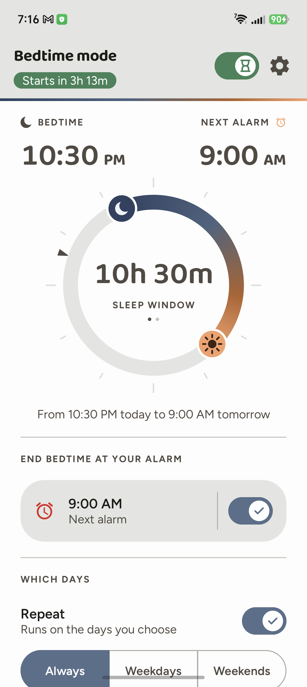
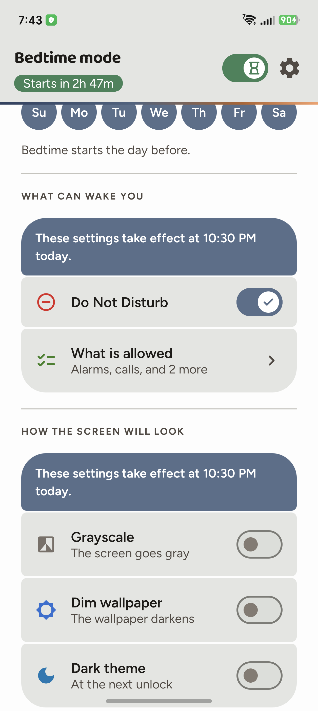
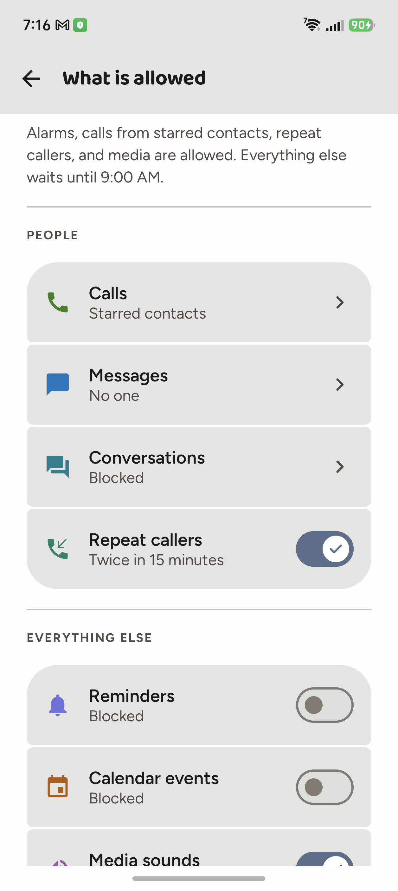

Застосунок для сну на Android, який спрацьовує вчасно.
Заспокойте свій телефон на бажаний проміжок часу — налаштуйте «Не турбувати» і екранні ефекти в одному зручному інтерфейсі. Усе працює, навіть якщо застосунок закритий: він користується дозволом «Будильники та нагадування», який ви надаєте в застосунку. Це дає гарантію спрацювання точно в заданий час і не проходить через планувальник фонових завдань.



Навіщо ще один застосунок для сну
В Android уже є режим сну. На багатьох телефонах він не спрацьовує, доки ви не відкриєте застосунок, який ним керує, — або спрацьовує, але невчасно. Режим сну запланований як фонове завдання, а чи виконуються фонові завдання — вирішує керування батареєю кожного виробника. Якщо десь у цьому ланцюжку завдання відкладають, не буде ні помилки, ні сповіщення — «Не турбувати» просто не вмикається, а ефекти не застосовуються.
Gloaming не користується фоновим завданням. Він просить дозвіл «Будильники та нагадування» — той самий, який ви надаєте в застосунку, — і система гарантує спрацювання в задану хвилину. Застосунок має власне правило «Не турбувати» і перемикає його сам, тож режим сну настає незалежно від того, відкритий застосунок чи ні.
Що вміє Gloaming
24-годинний циферблат
Один проміжок: тягніть будь-який кінець по колу або торкніться часу й виберіть його точно. Ви обираєте не вечір, коли лягаєте, а ранок, коли хочете прокинутися: виберіть суботу — і проміжок триватиме з вечора п’ятниці до ранку суботи.
Завершення за будильником
Увімкніть — і проміжок сам підлаштується під час вашого будильника, замість того щоб вести два розклади паралельно.
Плитка у швидких налаштуваннях із трьома станами
Три вигляди, кожен з одним значенням. Пісочний годинник — режим сну увімкнено, він чекає своєї години. Галочка — проміжок триває просто зараз. Власний знак Gloaming — режим сну вимкнено. Плитка ніколи не показує галочку для того, що ще не почалося.
Список винятків на час проміжку
Хто може подзвонити, хто написати, розмови, повторні дзвінки, нагадування, події календаря, медіа. Екран показує поточний стан системи, а не той, який застосунок увімкнув і вважає чинним.
Ефекти екрана
Чорно-білий екран, притемнення шпалер, темна тема, always-on дисплей. Якщо операційна система не дозволяє застосунку керувати ефектом, перемикач не показується взагалі — краще жодного, ніж такий, що бреше.
Він перевіряє, а не припускає
Деякі телефони заморожують застосунки у фоні, і поломка при цьому конкретна: кінець проміжку не спрацьовує, тож режим сну не завершується — усе, що він увімкнув, лишається увімкненим уже вдень. Gloaming стежить за кожним кінцем і повідомляє, коли той запізнився, — із кнопкою до налаштування фонової роботи, яке зазвичай і є причиною. А ще одноразово, через одинадцять хвилин після встановлення, питає, чи доставляє цей телефон фонові сигнали взагалі, — і мовчить, якщо все гаразд.
Спостереження за перезавантаженням
Для телефонів, які не кажуть застосункам, що телефон перезавантажився: режим сну лишається увімкненим, але вже нічого не спрацює. Gloaming це помічає.
Чого Gloaming не робить
У Gloaming немає дозволу на інтернет. Це не обіцянка не надсилати дані, а обмеження, яке забезпечує операційна система. Немає ні аналітики, ні реклами, ні акаунтів, ні стороннього коду. Ваш розклад і власний журнал застосунку лишаються на телефоні, а видалення застосунку прибирає їх.
Вимоги
Android 15 або новіший. Два дозволи, обидва надаються з самого застосунку: доступ до політики сповіщень (для «Не турбувати») і «Будильники та нагадування».